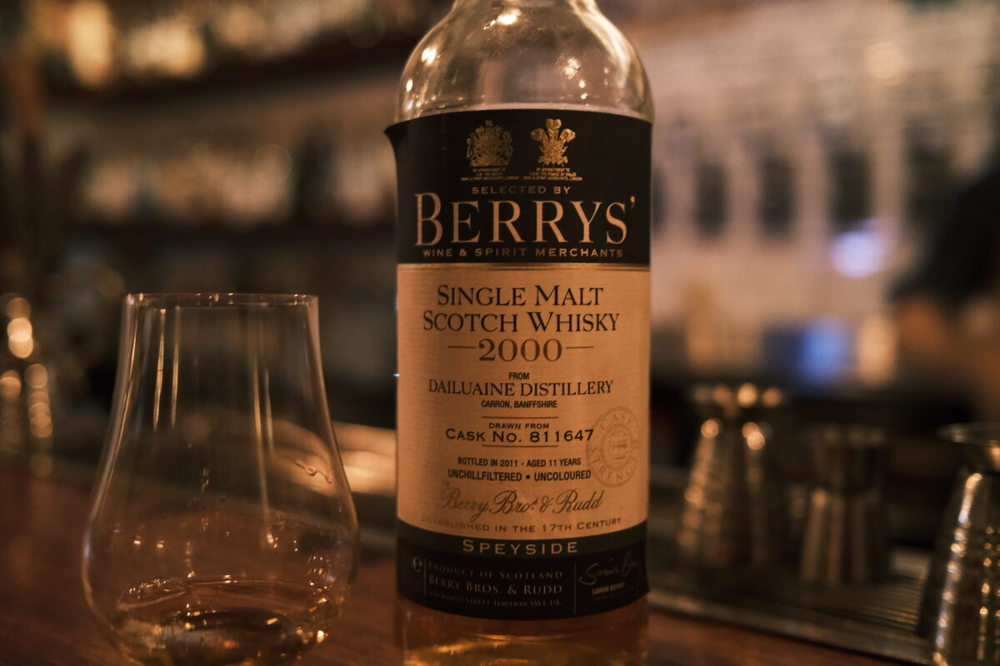

Dailuaine 2000 Berry Bros. & Rudd 11 years 56.6% (unspecified, cask 811647)
How mysterious… meet cask no. 811647. They fill a lot of casks at Dailuaine, don’t they?
Colour Gold.
Nose Caramel and toffee apples. Orchard fruits. Rockmelon. Very fruity. With water, chalk and lemon sorbet. Tangerines. A little woody.
Palate Hot and spicy. Mouth drying. Artificial fruit flavouring, berry jam, and lemon juice. Alright, this is is insanely hot. With water, much sweeter, a little creamy. Much better. Oranges and tangerines. Chilli, cayenne.
Finish Caramel and toffee, spicy malt. Oak spices. Mouth drying. With water, vanilla and bananas.
Comments Bring the heat. Clearly a bit of oak here. Dunk its head in the toilet a few times and a decent malt reveals itself. 80/100.

Posted by Dominic on 14 Jun 2021